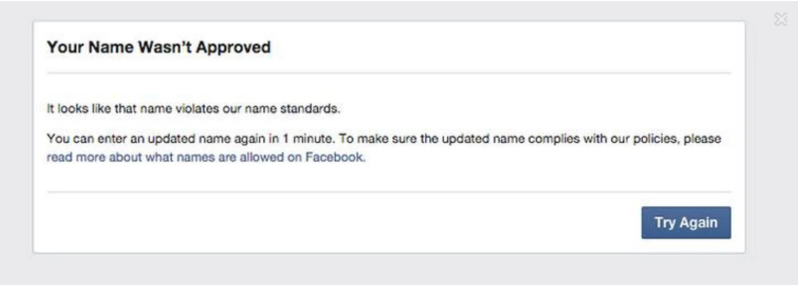

Reflections on diversity
and what we've learned from a pandemic
about /me
- worked with Plone* since 2003
- works at Clean Clothes Campaign
- open data, open source, open licensing
-
can be found under ‘polyester’
*includes Quaive, Castle, and just about any version
diversity
equity
inclusion
diversity
Without diverse perspectives and experiences in designing, building
and testing, products can and will fail many users.
How many?
Ahead of her 1983 space flight, NASA suggested sending astronaut
Sally Ride with 100 tampons for the week-long trip.
Hint: that's too many...
Yes, my name is ‘Dana Lone Hill’

Now, in a pandemic, this becomes not only
tragically cringe, but
actually dangerous
pandemic
The Great Experiment
Clean Clothes Campaign background
- over 250 organizations
- many in Global South
-
high-risk countries → high security demands
- medium level of tech skills
- low level of tech access
working from home
-
Define “home”…
-
Three generations, 10+ people in 30 m2
- Internet access at home not that usual
rude awakenings on a social call
“No, my children do not study online. During COVID-19, they studied
online for only a bit, but it was very costly because I had to pay
for their school fees, as well as for phone cards. I only had them
study online for about a month.”
“I did not have a phone for [my children] to study... Now I don’t
know if my kids can catch up...”
first take-aways
-
That's... intergenerational transfer of disadvantage
-
Eh, are you paying now too to have this social chat?
-
We need to start PAYING some people for meeting time
- OK, but how to get the money there?
cultural issues
implicit and explicit
high context vs low context
腹芸 / はらげい / Haragei
(‘stomach art’)
Eye contact or not
neurodiversity
Many people on the autism spectrum *loved* the focus
Yet also Slack was described as “that app from
hell”
mental health
- Hikikomori
- 24/7 culture
- Camera Pressure
Agility, jargon, era
Our network features people from 16 to 91
For many, English is already a third, fourth language
OMG, lol, 🤯 is a fifth... 😱
the underbelly of 'digital nomads'
-
colonial overtones
-
eroding the tax base
-
eroding healthcare base
-
the opposite of diversity
warning signs
If someone repeatedly doesn't show up with some excuse →
there's usually a deeper and sometimes systemic reason
If ‘decisions’ are ignored, your
process probably didn't work, and it wasn't a carried decision.
Online meetings
-
invest (modest) resources so people can fully join
- be mindful of various dominance vectors:
- language
- gender
- culture
- timezones
- ... and probably more!
Physical get-togethers
- visa inequality is a thing
- plan accordingly, if possible
-
take family and other (🐾, ⚕️, etc) obligations into account
Practical lessons & tips
- One size fits no-one particularly well
- Allow at least one day of reflection
- Do not screenshare, share!!
- Options: more is more
Offering options
-
People need different tools to access and process info
- both FORM (audio vs. written) and LANGUAGE
-
WHISPER: ai-based voice-to-text that can also translate
→ https://github.com/openai/whisper highly recommended!
Random Cliché quote, preferably deep-sounding. Make sure it fits on
a tile, or on one of those tacky letter boards. We're spreading the
love here...
take it to the things you build
and speak up when your client needs a gentle
‘slap’:
- binary gender options
- 3 billion people: my 📱 is my 💻
- ALT txt, a11y, transcriptions of podcasts
-
in the end, it's all about EMPATHY → inclusion